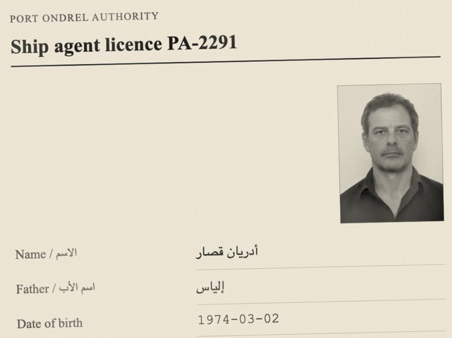
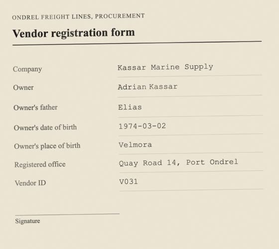
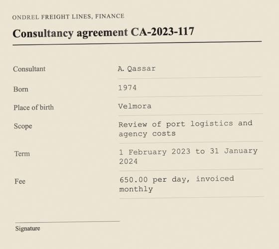
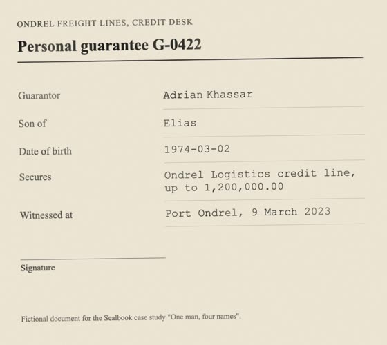
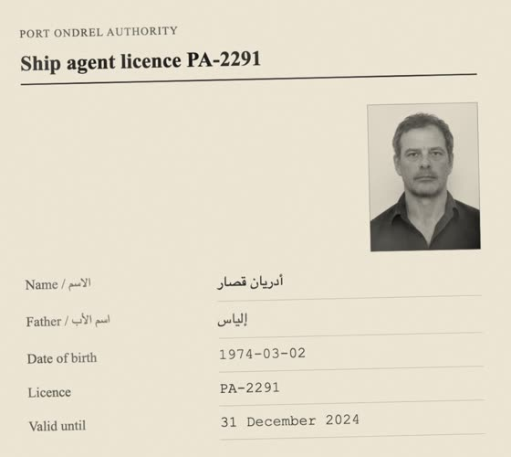

One man, four names
A freight company at Port Ondrel buys from a marine supplier, pays a logistics consultant, holds a personal guarantee for a credit line and works through a licensed ship agent. Each desk checked its own file and found nothing wrong.
Fictional case of fraud. Every person, company, document and place in it is invented.

The story
Procurement registered Kassar Marine Supply, owned by Adrian Kassar. Finance pays a consultant called A. Qassar. The credit desk holds a guarantee signed by Adrian Khassar. The port licensed a ship agent whose licence names him أدريان قصار. Four desks, four clean files.
They are one man, born on 2 March 1974 in Velmora, son of Elias. A marine surveyor called Adrian Kasar, born the same year, is someone else.
The pile
14 sources: nine sheets with 1,445 rows and five scans. They name 222 people in 230 records and hold 417 claims. The purchase ledger, the payments and the consultancy invoices alone run to 1,220 rows.

Adrian KassarVendor form, procurement 
A. QassarConsultancy agreement, finance 
Adrian KhassarPersonal guarantee, credit desk 
أدريان قصارShip agent licence, port
What the machine found
From the 417 claims, the rules proposed five same-person links without any model: four true links across the desks, and the surveyor. Each proposal shows what supports it, such as the same birth date or the same place of birth. A reader holding one desk's file sees none of this.
With a model reading the proposals, all four true links went to review and the surveyor was declined, because the places of birth differ: Torvane against Velmora. A deck cadet with the same name never reached review, because his birth date rules him out.
What the person decided
A person reads each proposal and signs it or declines it. Approving the four true links joins all nine of the man's records into one person across the four desks. Declining the surveyor keeps a different man out of the case. Nothing is merged until someone signs.
The score
4 of 6 true links found.
Approving those four joins all of his records. In one live trial the model merged no namesake: the rules offered the surveyor with the same name and birth year, and the model declined him.
Measured on 21 November 2026 on this synthetic case, with the rules alone and in one live trial on a zero-retention model route. A test in the source pins the rules' result.
The limit
Two true links are missed. The licence gives the father as إلياس, and the app reads that name wrong: it drops the first two letters as if they were the Arabic article. The fathers then seem to differ, and a different father rules a pair out. The man is still joined because the consultant's records name no father and link to every desk. The defect is known and not fixed yet.
From finding to court
Every approval in the app is a passkey signature by a named person, and every decision can be undone in the open. A signed finding leaves in a sealed package. Anyone handed that package, a court included, can check offline that not one word changed since it was signed, without trusting you or us.
The other cases
Credits
Every person, company, document and place here is fictional. The scans are typed forms rendered by the case's generator and aged like flatbed scans. The portrait on the passport copy and the licence is generated: a photoreal portrait of a man who does not exist, made with an image model on 2026-11-21. No real person's photo was used or edited. No real photograph is used, so no Commons credit applies.